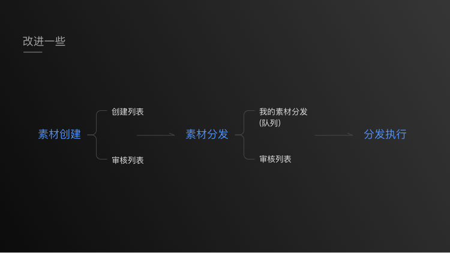
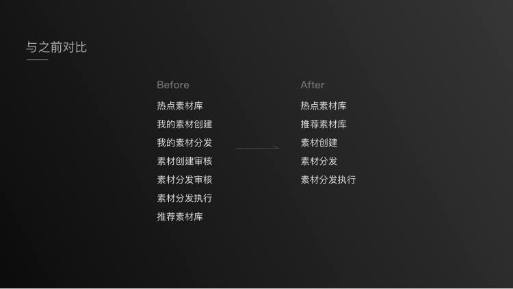
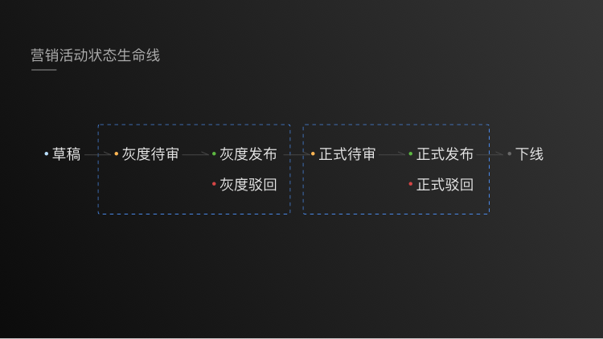

咪咕大营销项目review
本文会对咪咕一级营销平台中的“大营销”部分进行总结思考，因为这一部分较为复杂，所以用一篇文章来总结一下。
我在这个项目中所做的虽然不是最核心的一块，但是我想正好也趁着机会，可以经手一些复杂的交互案例，也是大有裨益的。
写在前面
如果我来画交互稿件，我会把整体业务逻辑用一种很直观的形式放在最前面（例如流程图、泳道图，某一块内容具体业务逻辑是什么等），这样就可以让我上下游的同事们更好地理解，节约沟通时间；同时过了段时间，自己也不会忘。
并且我希望以后可以将需求确认好之后，再开始做ui设计，otherwise，反复修改的时间成本太高了👇。
“大营销”项目中包括了很多块，分为以下几个部分
统一工作台：
一个类似于dashboard的页面，可以让用户看到自己的工作情况，并对权限进行设置。
统一素材库：
把素材集中整理作为一个库，然后对这个库进行操作（创建分发审核等）
专题制作及营销能力：
我可以做一个h5的页面，然后对其进行操作（制作、查看、审核、发布等）
活动报备及资源管理：
需要开展一个活动，于是对资源、活动、管理商进行管理
Part1统一工作台
在这一块着重介绍了用户、角色、权限是如何分配的：
通过这张图我们就能够知道如何设计一个“用户管理”模块，需要将用户、角色、权限对应起来，形成一个闭环。
Part2统一素材库
对于统一素材库，其本质是对所有的素材进行一个整理，业务流程如下：
通过梳理，我们看到流程略微有些长，而页面左侧的导航栏展示的特别多，有时候会让人有种迷失感，因为一下子看到这么多中文字会有点😡。
所以针对于这一点，结合业务流程，我把这一块的展示方式做了一个新的尝试：

我会把菜单这么来改：
- 热点素材库
- 推荐素材库
- 素材创建：创建列表、审核列表
- 素材分发：我的素材分发，素材分发审核
- 素材分发执行
通过这么来改进，我觉得用户使用起来会更易于理解些：要么是总的列表（热点素材库或者推荐素材库），要么是素材生命线中的某一类（创建、分发、审核），这样更清晰些。
如下图所示：

Part3专题制作及营销能力
里面分为了两个part：营销活动管理+专题活动管理
营销活动管理
营销活动的业务流程比较长，同时和@chunqiang沟通了下，因为排期问题，所以在“资源监控”这一块做的不是那么全面，在之后应该会填上。
整体流程如下：
我想作为运营人员，应该对流程是比较了解的了。但是，如果此时用户的状态并不是太好，还有很多其他事情要去处理，如何才能让用户最“无脑”的来完成当前的任务？
所以，我做了一个尝试，在最上方有一个流程条，告诉用户任务可能在哪一步，以及接下来事态会如何发展。

在页面中，具体是这样来展示：
这么做最大的好处就在于：让用户不用动太多的脑子，就知道当前状态以及what will happen next；而之前的设计会让用户再去脑子里面思考一下，我应该做什么。
专题页面管理
其中包括了三块：专题制作、专题审核、效果统计。
其中专题制作较为复杂，审核和统计相对比较简单，所以此处会着重说专题制作这一块。
专题制作
这一块的重点是h5的制作，里面有大量秀米/易企秀的参考。
专题审核和效果统计
专题审核顾名思义就是对专题进行审核，nothing big deal.
效果统计指的是对h5的效果展示，限于工期问题，这一期做的也不是特别复杂，但其实这一块可以做的更加深入一些。